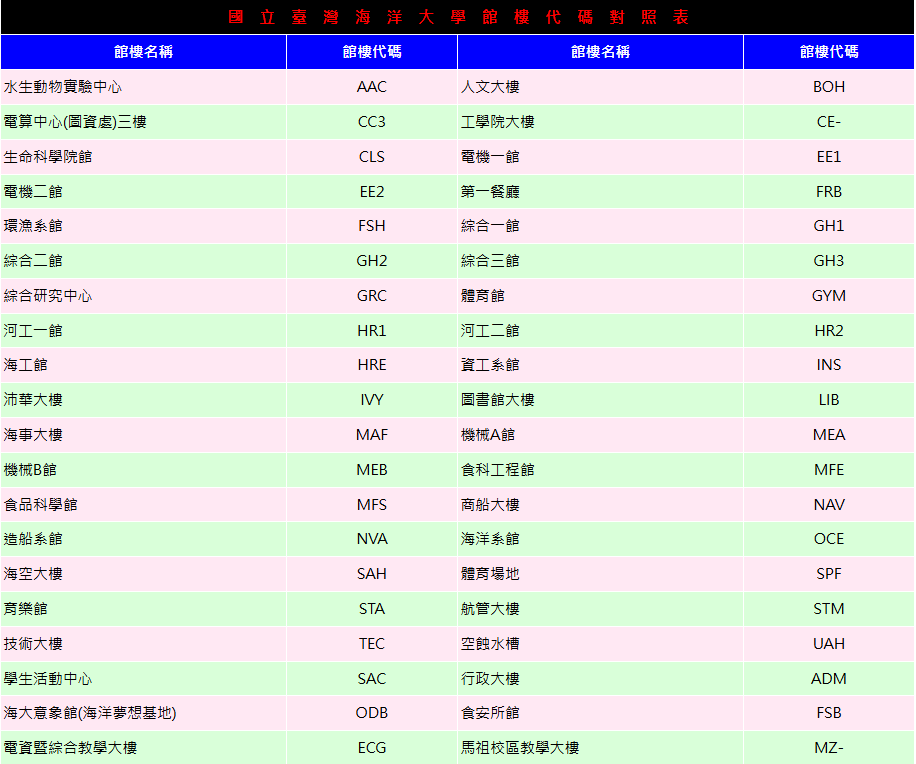

從一棟大樓開始
也可以在左側輸入館樓名稱或代碼，例如 EE1。
課程資料
目前已依提供的完整課程表更新。後續可以沿用 Excel 的「課程名稱、上課時間、上課地點、授課老師」四欄格式提供資料；也可以使用下方較完整的範本。館樓代碼請沿用原表，包括 CE- 與 MZ- 的連字號。
每個上課時段填一列。未定教室可留白；無法確認的位置會顯示待確認，不會自動猜測。
40 組館樓代碼
依你提供的代碼表建置。沒有列在代碼表中的地點，保留地圖編號。

此互動地圖需要啟用 JavaScript。